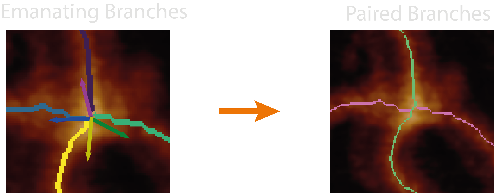

NodeStats#
This section gives an in-depth overview of the steps taken in the NodeStats module.
At a Glance : Crossing Analyses#
The nodestats.py module handles all the functions associated with identifying and analysing the crossing regions
(nodes) and crossing branches in pruned skeletons.
The quality of the resultant metrics and over/underlying branch classifications depend on the quality of the pruned skeleton, the effectiveness of automating the joining of skeleton junction points through the parameters.
This module identifies crossing regions from nearby skeleton junctions and analyses each branch emanating out from the
crossing to pair them, then determines the overlying and underlying strand using the full-width half-maximum from each
height trace passing through the crossing. It adds the number of identified crossings and the minimum and average pseudo
confidence values to the all_statistics.csv.
Some quick FYI’s:
Bad skeletons, bad classifications - If the skeleton does not lie along the backbone of the structure, it’s resulting height trace and thus stacking order calculation may not be accurate.
No skeletons in image - The NodeStats
allimages may not show the resultant skeletons if the plottingdpivalue is too low (varies based on image size) as these single pixel lines cannot be resolved by matplotlib.Incorrect pairing - Pairing of the branches emanating from a crossing is based on the assumption that the regions being compared (
branch_pairing_length) are below half the persistence length of the material, and as such they should follow straight lines through the crossing region.Masked colours are relative - Any mask colours that may be produced by plots are relative to the mask values in that image as they will always span the masked colourmap, and will not compare well across images if the range of mask values differ.
Odd numbered crossings - These can result from poor masking / pruning and are handled by looking further around odd nodes to join them (
node_extend_dist), and if they are still odd, the default behaviour results from thepair_odd_branchesparameter to pair as many as possible leaving one remaining, or to not pair any of them.
Processing Steps#
1. Identify Skeleton Junctions#
The pruned skeletons undergo a 2D convolution with a 3x3 kernel of 1’s, and the skeleton is the remapped onto the resultant image. This produces a non-binary skeleton where the value of each skeleton pixel is the count of it’s neighbours + 1. This is used to produce a new skeleton image in with pixels labelled as:
1 - Endpoints
2 - Skeleton segments
3 - Junctions
This produces a skeleton mask (blue) where the junctions (green) and endpoints (pink) can be seen.
2. Clean-up the Crossing Regions#
The alignment of the skeleton onto the crossing backbone is key to obtaining good analyses from this module, especially for accurate topological classifications and calculation of writhe signs. For this reason, a small area around the junctions points are re-filled with the mask and skeletonised again using the height biasing skeletonisation approach.
This has been useful to align the skeletons at branch crossing points however, the modification to the skeleton has also been known to cause problems as no additional pruning steps are done.
3. Connect the Junctions#
Skeleton segments which represent a crossing may not join up perfectly at a single pixel (junction) and as a result of
the skeletonisation procedure, may be offset from one another and need to be combined to represent the crossing region
or “node”. Therefore, junctions closer than the node_joining_length of each other define a crossing region, and the
pixels which span between the junctions along the skeleton are also labelled as part of the crossing.
Depending on the sample type or skeletonisation / pruning errors, there might exist an odd number of emanating branches
after this initial pairing. In DNA samples, we typically see this where just before a crossing region, the two strands
lie close to each other, creating an elongated crossing region in the skeletonisation representation. In order to
capture these for analysis, the node_extend_dist tells only odd-branch crossing regions to look for and extend to
other odd-branch crossing regions within this distance, using the shortest path possible along the skeleton. Coming
after the initial connection, this means that closer crossing regions can be joined, and that 3-branch nodes can be
joined through a 4-branch node to another 3-branch node.
4. Pair the Branches#
For each of these crossing regions, the skeletons are reduced to solely a single crossing and their emanating
branches. The part we are interested in, and obtain traces for are branch regions defined as extending upto the
branch_pairing_length away from the central crossing region. This length should be below half the persistence length
of the material, so that the branches should follow (roughly) straight lines through the crossing region.

This enables us to pair emanating branches based on the angles between their vectors using bipartite matching to obtain the best pairing combinations to use for subsequent steps.
5. Height Traces#
For each paired branch in the crossing region, we can use a series of dilations to obtain two more accompanying branches to average our traces across a few pixels and reduce the error in the skeleton position along the backbone at the crossing. Using the underlying height values, and calculating the distance radially (not along the path) from the highest point in the crossing (the node centre), a height trace of the topographic crossing can be used to find the full-width half-maximum (FWHM) value of the crossing peak and determine which crossing branch lies atop (largest value) or beneath (smallest value) the other.

From the FWHM of the height traces, a pseudo confidence value is obtained using the equation below. It calculates the ratio of the minimum to maximum value across all FWHM pairs of all crossing branches, N, (using combinatorics to pair crossing branches if >2):
$$ \text{crossing confidence} = \frac{1}{N} \sum_{\text{FWHM_pairs}} \left(1 - \frac{\min(\text{FWHM_pairs})}{\max(\text{FWHM_pairs})}\right) $$
Outputs#
The <image>_<threshold>_nodes image shows the crossing regions highlighted in green, skeleton segments in blue, and
endpoints in pink.
For each grain, the following new columns are added to the grainstats.csv file:
| Column Name | Description | Data Type |
|---|---|---|
num_crossings |
The number of crossing regions found in the grain. Note: this will be equal to or lower than the number of junctions explained in the previous section. | integer |
avg_crossing_confidence |
The average of all pseudo crossing confidences. Used to estimate quality of predictions. | integer |
min_crossing_confidence |
The minimum of all pseudo crossing confidences. Used to estimate quality of predictions. | float |
Note: Most information obtained during the NodeStats processing can be obtained from the <image_name>.topostats file
found within the processed folder and contains a multitude of grain and branch statistics such as:
number of nodes per grain
node confidences
node coordinates
number of branches per node
branch distance array
branch height array
branch FWHM dictionary containing the FWHM, half max, and peak values
matched and unmatched branch angles
 Note: The writhe sign is
identified in
Note: The writhe sign is
identified in ordered_traces.py, not nodestats as the path needs directionality provided by the ordering. It is
added to the NodeStats dictionary as this carries the node statistics.
Diagnostic Images#
Images produced by the plotting.image_set: all for this module are:
25-convolved_skeleton- The result of the convolution operation described in 1. The default “blue_green_pink” colourmap for this image represent skeleton segments, junctions, and endpoints respectively.26-node_centres- The highest pixel in each crossing region (green) with the same colourmap as above. This is where the ‘0’ distance point corresponds to in the height traces.nodesfolder:grain_<X>_node_<Y>_node_area_skeleton>- Contains the reduced area of grain number X and node number Y which consists of the node in question and only it’s emanating branches.grain_<X>_node_<Y>_node_branch_mask>- Visualises the crossing branches where the length depends onbranch_pairing_length.grain_<X>_node_<Y>_node_avg_mask>- Visualises the dilated crossing branches used to obtain an average height trace along the crossing branches.grain_<X>_node_<Y>_linetrace_halfmax>- Shows the height trace of each crossing branch, and was used to determine the FWHM. The vertical lines show the location of where the half-maximum was taken from.
Possible Uses#
This module would lend itself useful for measuring and quantifying complex overlapping structures, and is a requirement
for the nodestats method in ordered_tracing which orders the trace along a complex topology.
We have used this module to broadly quantify conformational differences between relaxed and supercoiled DNA samples based on the number of crossing regions seen in samples of each grain. Additionally the FWHM results have been used to confirm the classification topologically complex molecules via the highest confidence. The branch statistics have been used to identify and quantify different conformations of topologically complex DNA and the effect of surface deposition. Finally, splitting the odd-branched nodes enabled us to identify and measure the replicated and unreplicated DNA segments in replication intermediates despite their complex writhed path. These analyses can be seen in our paper; Under or Over? Tracing Complex DNA Topologies with High Resolution Atomic Force Microscopy.